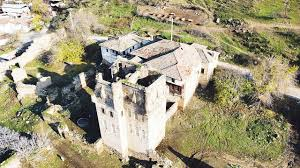
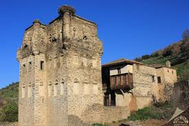

Nazilli’ye bağlı Esenköy’de bulunan yapı grubu bugün ülkemizde örneklerine çokça rastlamadığımız daha çok Avrupa'daki feodal beylerin mutlakiyetlerini korumak amacıyla inşa edilmiştir. Ancak burada XVII. Ve XVIII.yüzyıllara ait, Osmanlı Dönemi kalıntıları ile de karşılaşılmıştır.


 "Aydın"a dönmek için basın
"Aydın"a dönmek için basın